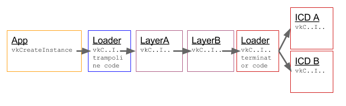
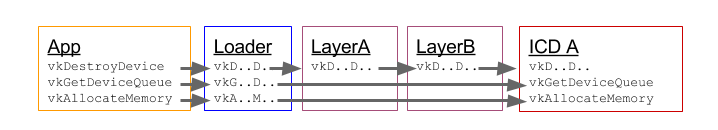

Vulkan Loader Specification and Architecture Overview
Goals of this document
Specify necessary functions and expected behavior of interface between the loader library and ICDs and layers for Windows, Linux and Android based systems. Also describe the application visible behaviors of the loader.
Audience
This document is primarily targeted at Vulkan application, driver and layer developers. However, it can also be used by any developer interested in understanding more about how the Vulkan loader and layers interact.
Loader goals
Support multiple ICDs (Installable Client Drivers) to co-exist on a system without interfering with each other.
Support optional modules (layers) that can be enabled by an application, developer or the system and have no impact when not enabled.
Negligible performance cost for an application calling through the loader to an ICD entry point.
Architectural overview of layers and loader
Vulkan is a layered architecture placing the Application on one end, the ICDs on the other, and the loader and some number of layers in between.
Layers are implemented as libraries that can be enabled in different ways (including by application request) and loaded during CreateInstance. Each layer can chooses to hook (intercept) any Vulkan commands which in turn can be ignored, augmented, or simply passed along. A layer may also expose functionality not available in the loader or any ICD. Some examples of this include: the ability to perform Vulkan API tracing and debugging, validate API usage, or overlay additional content on the applications surfaces.
The loader is responsible for working with the various layers as well as supporting multiple GPUs and their drivers. Any Vulkan command may wind up calling into a diverse set of modules: loader, layers, and ICDs. The loader is critical to managing the proper dispatching of Vulkan commands to the appropriate set of layers and ICDs. The Vulkan object model allows the loader to insert layers into a call chain so that the layers can process Vulkan commands prior to the ICD being called.
Vulkan uses an object model to control the scope of a particular action / operation. The object to be acted on is always the first parameter of a Vulkan call and is a dispatchable object (see Vulkan specification section 2.3 Object Model). Under the covers, the dispatchable object handle is a pointer to a structure, which in turn, contains a pointer to a dispatch table maintained by the loader. This dispatch table contains pointers to the Vulkan functions appropriate to that object.
There are two types of dispatch tables the loader maintains:
- Instance Dispatch Table
- Contains any function that takes a VkInstance or VkPhysicalDevice as their first parameter
- vkEnumeratePhysicalDevices
- vkDestroyInstance
- vkCreateInstance
- ...
- Contains any function that takes a VkInstance or VkPhysicalDevice as their first parameter
- Device Dispatch Table
- Contains any function that takes a VkDevice, VkQueue or VkCommandBuffer as their first parameter
These instance and device dispatch tables are constructed when the application calls vkCreateInstance and vkCreateDevice. At that time the application and/or system can specify optional layers to be included. The loader will initialize the specified layers to create a call chain for each Vulkan function and each entry of the dispatch table will point to the first element of that chain. Thus, the loader builds an instance call chain for each VkInstance that is created and a device call chain for each VkDevice that is created.
For example, the diagram below represents what happens in the call chain for vkCreateInstance. After initializing the chain, the loader will call into the first layer's vkCreateInstance which will call the next finally terminating in the loader again where this function calls every ICD's vkCreateInstance and saves the results. This allows every enabled layer for this chain to set up what it needs based on the VkInstanceCreateInfo structure from the application. 
This also highlights some of the complexity the loader must manage when using instance chains. As shown here, the loader must aggregate information from multiple devices when they are present. This means that the loader has to know about instance level extensions to aggregate them correctly.
Device chains are created at vkCreateDevice and are generally simpler because they deal with only a single device and the ICD can always be the terminator of the chain. The below diagram also illustrates how layers (either device or instance) can skip intercepting any given Vulkan entry point. 
Application interface to loader
In this section we'll discuss how an application interacts with the loader.
Linking to loader library for core and WSI extension symbols.
Dynamic Vulkan command lookup & application dispatch table.
Loader library filenames for linking to different Vulkan ABI versions.
Layers
Extensions
vkGetInstanceProcAddr, vkGetDeviceProcAddr
The loader library on Windows, Linux and Android will export all core Vulkan and all appropriate Window System Interface (WSI) extensions. This is done to make it simpler to get started with Vulkan development. When an application links directly to the loader library in this way, the Vulkan calls are simple trampoline functions that jump to the appropriate dispatch table entry for the object they are given.
Applications are not required to link directly to the loader library, instead they can use the appropriate platform specific dynamic symbol lookup on the loader library to initialize the application's own dispatch table. This allows an application to fail gracefully if the loader cannot be found, and it provides the fastest mechanism for the application to call Vulkan functions. An application will only need to query (via system calls such as dlsym()) the address of vkGetInstanceProcAddr from the loader library. Using vkGetInstanceProcAddr the application can then discover the address of all instance and global functions and extensions, such as vkCreateInstance, vkEnumerateInstanceExtensionProperties and vkEnumerateInstanceLayerProperties in a platform independent way.
The Vulkan loader library will be distributed in various ways including Vulkan SDKs, OS package distributions and IHV driver packages. These details are beyond the scope of this document. However, the name and versioning of the Vulkan loader library is specified so an app can link to the correct Vulkan ABI library version. Vulkan versioning is such that ABI backwards compatibility is guaranteed for all versions with the same major number (e.g. 1.0 and 1.1). On Windows, the loader library encodes the ABI version in its name such that multiple ABI incompatible versions of the loader can peacefully coexist on a given system. The Vulkan loader library file name is "vulkan-.dll". For example, for Vulkan version 1.X on Windows the library filename is vulkan-1.dll. And this library file can typically be found in the windows/system32 directory (on 64-bit Windows installs, the 32-bit version of the loader with the same name can be found in the windows/sysWOW64 directory).
For Linux, shared libraries are versioned based on a suffix. Thus, the ABI number is not encoded in the base of the library filename as on Windows. On Linux an application wanting to link to the latest Vulkan ABI version would just link to the name vulkan (libvulkan.so). A specific Vulkan ABI version can also be linked to by applications (e.g. libvulkan.so.1).
Layer Usage
Applications desiring Vulkan functionality beyond what the core API offers may use various layers or extensions. A layer cannot introduce new Vulkan API entry-points not exposed in Vulkan.h, but may offer extensions that do. A common use of layers is for API validation which can be enabled by loading the layer during application development, but not loading the layer for application release. This eliminates the overhead of validating the application's usage of the API, something that wasn't available on some previous graphics APIs.
Layers discovered by the loader are reported to the application via vkEnumerateInstanceLayerProperties. Layers are enabled at vkCreateInstance and are active for all Vulkan commands using the given VkInstance and any of it's child objects. For example, the ppEnabledLayerNames array in the VkInstanceCreateInfo structure is used by the application to list the layer names to be enabled at vkCreateInstance. At vkCreateInstance and vkCreateDevice, the loader will construct call chains that include the application specified (enabled) layers. Order is important in the ppEnabledLayerNames array; array element 0 is the topmost (closest to the application) layer inserted in the chain and the last array element is closest to the driver.
NOTE: vkCreateDevice originally was able to select layers in a similar manner to vkCreateInstance. This lead to the concept of "instance layers" and "device layers". It was decided by Khronos to deprecate the "device layer" functionality and only consider "instance layers". Therefore, vkCreateDevice will use the layers specified at vkCreateInstance. Additionally, vkEnumerateDeviceLayerProperties has been deprecated.
Developers may want to enable layers that are not enabled by the given application they are using. On Linux and Windows, the environment variable "VK_INSTANCE_LAYERS" can be used to enable additional layers which are not specified (enabled) by the application at vkCreateInstance. VK_INSTANCE_LAYERS is a colon (Linux)/semi-colon (Windows) separated list of layer names to enable. Order is relevant with the first layer in the list being the topmost layer (closest to the application) and the last layer in the list being the bottommost layer (closest to the driver).
Application specified layers and user specified layers (via environment variables) are aggregated and duplicates removed by the loader when enabling layers. Layers specified via environment variable are topmost (closest to the application) while layers specified by the application are bottommost.
An example of using these environment variables to activate the validation layer VK_LAYER_LUNARG_parameter_validation on Windows or Linux is as follows:
> $ export VK_INSTANCE_LAYERS=VK_LAYER_LUNARG_parameter_validation
Implicit vs Explicit Layers
Some platforms, including Linux and Windows, support layers which are enabled automatically by the loader rather than explicitly by the application (or via environment variable). Explicit layers are those layers enabled by the application (or environment variable) by providing the layer name. Implicit layers are those layers enabled by the loader automatically. Any implicit layers the loader discovers on the system in the appropriate location will be enabled (subject to environment variable overrides described later). Discovery of properly installed implicit and explicit layers is described later. Explicitly enabling a layer that is implicitly enabled has no additional effect: the layer will still be enabled implicitly by the loader.
Implicit layers have an additional requirement over explicit layers in that they require being able to be disabled by an environmental variable. This is due to the fact that they are not visible to the application and could cause issues. A good principle to keep in mind would be to define both an enable and disable environment variable so the users can deterministicly enable the functionality. On Desktop platforms (Windows and Linux), these enable/disable settings are defined in the layer's JSON file.
Extensions are optional functionality provided by a layer, the loader or an ICD. Extensions can modify the behavior of the Vulkan API and need to be specified and registered with Khronos.
Instance/Device Extensions
Instance extensions can be discovered via vkEnumerateInstanceExtensionProperties. Device extensions can be discovered via vkEnumerateDeviceExtensionProperties. The loader discovers and aggregates all extensions from layers (both explicit and implicit), ICDs and the loader before reporting them to the application in vkEnumerate*ExtensionProperties. The pLayerName parameter in these functions is used to select either a single layer or the Vulkan platform implementation. If pLayerName is NULL, extensions from Vulkan implementation components (including loader, implicit layers, and ICDs) are enumerated. If pLayerName is equal to a discovered layer module name then any extensions from that layer (which may be implicit or explicit) are enumerated. Duplicate extensions (e.g. an implicit layer and ICD might report support for the same extension) are eliminated by the loader. For duplicates, the ICD version is reported and the layer version is culled. Extensions must be enabled (in vkCreateInstance or vkCreateDevice) before they can be used.
Extension command entry points should be queried via vkGetInstanceProcAddr or vkGetDeviceProcAddr. vkGetDeviceProcAddr can only be used to query for device extension or core device entry points. Device entry points include any command that uses a VkDevice as the first parameter or a dispatchable object that is a child of a VkDevice (currently this includes VkQueue and VkCommandBuffer). vkGetInstanceProcAddr can be used to query either device or instance extension entry points in addition to all core entry points.
VkGetDeviceProcAddr is particularly interesting because it will provide the most efficient way to call into the ICD. For example, the diagram below shows what could happen if the application were to use vkGetDeviceProcAddr for the function "vkGetDeviceQueue" and "vkDestroyDevice" but not "vkAllocateMemory". The resulting function pointer (fpGetDeviceQueue) would be the ICD's entry point if the loader and any enabled layers do not need to see that call. Even if an enabled layer intercepts the call (e.g. vkDestroyDevice) the loader trampoline code is skipped for function pointers obtained via vkGetDeviceProcAddr. This also means that function pointers obtained via vkGetDeviceProcAddr will only work with the specific VkDevice it was created for, using it with another device has undefined results. For extensions, Get*ProcAddr will often be the only way to access extension API features.

WSI Extensions
Khronos approved WSI extensions are available and provide Windows System Integration support for various execution environments. It is important to understand that some WSI extensions are valid for all targets, but others are particular to a given execution environment (and loader). This desktop loader (currently targeting Windows and Linux) only enables those WSI extensions that are appropriate to the current environment. For the most part, the selection is done in the loader using compile-time preprocessor flags. All versions of the desktop loader currently expose at least the following WSI extension support:
- VK_KHR_surface
- VK_KHR_swapchain
- VK_KHR_display
In addition, each of the following OS targets for the loader support target-specific extensions:
- Windows : VK_KHR_win32_surface
- Linux (default) : VK_KHR_xcb_surface and VK_KHR_xlib_surface
- Linux (Wayland build) : VK_KHR_wayland_surface
- Linux (Mir build) : VK_KHR_mir_surface
NOTE: Wayland and Mir targets are not fully supported at this time and should be considered alpha quality.
It is important to understand that while the loader may support the various entry-points for these extensions, there is a hand-shake required to actually use them:
- At least one physical device must support the extension(s)
- The application must select such a physical device
- The application must request the extension(s) be enabled while creating the instance or logical device (This depends on whether or not the given extension works with an instance or a device).
- The instance and/or logical device creation must succeed.
Only then can you expect to properly use a WSI extension in your Vulkan program.
New Extensions
With the ability to expand Vulkan so easily, extensions will be created that the loader knows nothing about. If the extension is a device extension, the loader will pass the unknown entry-point down the device call chain ending with the appropriate ICD entry-points. However, if the extension is an instance extension, the loader will fail to load it.
But why doesn't the loader support unknown instance extensions?
Let's look again at the Instance call chain:
Notice that for a normal instance function call, the loader has to handle passing along the function call to the available ICDs. If the loader has no idea of the parameters or return value of the instance call, it can't properly pass information along to the ICDs. There may be ways to do this, which will be explored in the future. However, for now, this loader does not support any unknown instance extensions.
Because the device call-chain does not pass through the loader terminator, this is not a problem for device extensions. Instead, device extensions terminate directly in the ICD they are associated with.
Is this a big problem?
No! Most extension functionality only affects a device and not an instance or a physical
device. Thus, the overwhelming majority of extensions will be device extensions rather than
instance extensions.
Vulkan Installable Client Driver interface with the loader
ICD discovery
Vulkan allows multiple drivers each with one or more devices (represented by a Vulkan VkPhysicalDevice object) to be used collectively. The loader is responsible for discovering available Vulkan ICDs on the system. Given a list of available ICDs, the loader can enumerate all the physical devices available for an application and return this information to the application. The process in which the loader discovers the available Installable Client Drivers (ICDs) on a system is platform dependent. Windows, Linux and Android ICD discovery details are listed below.
Windows
Properly-Installed ICDs
In order to find properly-installed ICDs, the Vulkan loader will scan the values in the following Windows registry key:
HKEY_LOCAL_MACHINE\SOFTWARE\Khronos\Vulkan\Drivers
On 64-bit Windows, when a 32-bit application is triggered, the loader will scan for 32-bit drivers in a separate area of the registry:
HKEY_LOCAL_MACHINE\SOFTWARE\WOW6432Node\Khronos\Vulkan\Drivers
For each value in this key which has DWORD data set to 0, the loader opens the JSON format text information file (a.k.a. "manifest file") specified by the name of the value. Each name must be a full pathname to the text manifest file. The Vulkan loader will open each manifest file to obtain the name or pathname of an ICD shared library (".dll") file. For example:
{
"file_format_version": "1.0.0",
"ICD": {
"library_path": "path to ICD library",
"api_version": "1.0.5"
}
}
The "library_path" specifies either a filename, a relative pathname, or a full pathname to an ICD shared library file, which the loader will attempt to load using LoadLibrary(). If the ICD is specified via a filename, the shared library lives in the system's DLL search path (e.g. in the "C:\Windows\System32" folder). If the ICD is specified via a relative pathname, it is relative to the path of the manifest file. Relative pathnames are those that do not start with a drive specifier (e.g. "C:"), nor with a directory separator (i.e. the '\' character), but do contain at least one directory separator.
The "file_format_version" specifies a major.minor.patch version number in case the format of the text information file changes in the future. If the same ICD shared library supports multiple, incompatible versions of text manifest file format versions, it must have separate JSON files for each (all of which may point to the same shared library).
The "api_version" specifies the major.minor.patch version number of the Vulkan API that the shared library (referenced by "library_path") was built with.
There are no rules about the name of the text information files (except the .json suffix).
There are no rules about the name of the ICD shared library files. For example, if the registry contains the following values,
[HKEY_LOCAL_MACHINE\SOFTWARE\Khronos\Vulkan\Drivers\]
"C:\vendor a\vk_vendora.json"=dword:00000000
"C:\windows\system32\vendorb_vk.json"=dword:00000000
"C:\windows\system32\vendorc_icd.json"=dword:00000000
then the loader will open the following text information files, with the specified contents:
| Text File Name | Text File Contents |
|---|---|
| vk_vendora.json | "ICD": { "library_path": "C:\VENDOR A\vk_vendora.dll", "api_version": "1.0.5" } |
| vendorb_vk.json | "ICD": { "library_path": "vendorb_vk.dll", "api_version": "1.0.5" } |
| vendorc_icd.json | "ICD": { "library_path": "vedorc_icd.dll", "api_version": "1.0.5" } |
Then the loader will open the three files mentioned in the "Text File Contents" column, and then try to load and use the three shared libraries indicated by the ICD.library_path value.
Using Pre-Production ICDs
IHV developers (and sometimes other developers) need to use special, pre-production ICDs. In some cases, a pre-production ICD may be in an installable package. In other cases, a pre-production ICD may simply be a shared library in the developer's build tree. In this latter case, we want to allow developers to point to such an ICD without modifying the properly-installed ICD(s) on their system.
This need is met with the use of the "VK_ICD_FILENAMES" environment variable, which will override the mechanism used for finding properly-installed ICDs. In other words, only the ICDs listed in "VK_ICD_FILENAMES" will be used. The "VK_ICD_FILENAMES" environment variable is a semi-colon-separated list of ICD text information files (aka manifest files), containing the following:
- A full pathname (e.g. "C:\my_build\my_icd.json")
Typically, "VK_ICD_FILENAMES" will only contain a full pathname to one info file for a developer-built ICD. A semi-colon is only used if more than one ICD is listed.
For example, if a developer wants to refer to one ICD that they built, they could set the "VK_ICD_FILENAMES" environment variable to:
C:\my_build\my_icd.json
If a developer wants to refer to two ICDs, one of which is a properly-installed ICD, they can use the full pathname of the text file:
C:\Windows\System32\vendorc_icd.json;C:\my_build\my_icd.json
Notice the semi-colon between "C:\Windows\System32\vendorc_icd.json" and "C:\my_build\my_icd.json".
Linux
Properly-Installed ICDs
In order to find properly-installed ICDs, the Vulkan loader will scan the files in the following Linux directories:
/usr/share/vulkan/icd.d /etc/vulkan/icd.d $HOME/.local/share/vulkan/icd.d
Where $HOME is the current home directory of the application's user id; this path will be ignored for suid programs.
These directories will contain text information files (a.k.a. "manifest files"), that use a JSON format.
The Vulkan loader will open each manifest file found to obtain the name or pathname of an ICD shared library (".so") file. For example:
{
"file_format_version": "1.0.0",
"ICD": {
"library_path": "path to ICD library",
"api_version": "1.0.5"
}
}
The "library_path" specifies either a filename, a relative pathname, or a full pathname to an ICD shared library file. If the ICD is specified via a filename, the loader will attempt to open that file as a shared object using dlopen(), and the file must be in a directory that dlopen is configured to look in (Note: various distributions are configured differently). A distribution is free to create Vulkan-specific system directories (e.g. ".../vulkan/icd"), but is not required to do so. If the ICD is specified via a relative pathname, it is relative to the path of the info file. Relative pathnames are those that do not start with, but do contain at least one directory separator (i.e. the '/' character). For example, "lib/vendora.so" and "./vendora.so" are examples of relative pathnames.
The "file_format_version" provides a major.minor.patch version number in case the format of the manifest file changes in the future. If the same ICD shared library supports multiple, incompatible versions of manifest file format versions, it must have multiple manifest files (all of which may point to the same shared library).
The "api_version" specifies the major.minor.patch version number of the Vulkan API that the shared library (referenced by "library_path") was built with.
The "/usr/share/vulkan/icd.d" directory is for ICDs that are installed from Linux-distribution-provided packages. The "/etc/vulkan/icd.d" directory is for ICDs that are installed from non-Linux-distribution-provided packages.
There are no rules about the name of the text files (except the .json suffix).
There are no rules about the name of the ICD shared library files. For example, if the "/usr/share/vulkan/icd.d" directory contain the following files, with the specified contents:
| Text File Name | Text File Contents |
|---|---|
| vk_vendora.json | "ICD": { "library_path": "vendora.so", "api_version": "1.0.5" } |
| vendorb_vk.json | "ICD": { "library_path": "vendorb_vulkan_icd.so", "api_version": "1.0.5" } |
| vendorc_icd.json | "ICD": { "library_path": "/usr/lib/VENDORC/icd.so", "api_version": "1.0.5" } |
then the loader will open the three files mentioned in the "Text File Contents" column, and then try to load and use the three shared libraries indicated by the ICD.library_path value.
Using Pre-Production ICDs
IHV developers (and sometimes other developers) need to use special, pre-production ICDs. In some cases, a pre-production ICD may be in an installable package. In other cases, a pre-production ICD may simply be a shared library in the developer's build tree. In this latter case, we want to allow developers to point to such an ICD without modifying the properly-installed ICD(s) on their system.
This need is met with the use of the "VK_ICD_FILENAMES" environment variable, which will override the mechanism used for finding properly-installed ICDs. In other words, only the ICDs listed in "VK_ICD_FILENAMES" will be used.
The "VK_ICD_FILENAMES" environment variable is a colon-separated list of ICD manifest files, containing the following:
A filename (e.g. "libvkicd.json") in the "/usr/share/vulkan/icd.d", "/etc/vulkan/icd.d" "$HOME/.local/share/vulkan/icd.d" directories
A full pathname (e.g. "/my_build/my_icd.json")
Typically, "VK_ICD_FILENAMES" will only contain a full pathname to one info file for a developer-built ICD. A colon is only used if more than one ICD is listed.
For example, if a developer wants to refer to one ICD that they built, they could set the "VK_ICD_FILENAMES" environment variable to:
/my_build/my_icd.json
If a developer wants to refer to two ICDs, one of which is a properly-installed ICD, they can use the name of the text file in the system directory:
vendorc_vulkan.json:/my_build/my_icd.json
Notice the colon between "vendorc_vulkan.json" and "/my_build/my_icd.json".
NOTE: this environment variable will be ignored for suid programs.
Android
The Android loader lives in the system library folder. The location cannot be changed. The loader will load the driver/ICD via hw_get_module with the ID of "vulkan". Due to security policies in Android none of this can be modified under normal use.
ICD interface requirements
Generally, for all Vulkan commands issued by an application, the loader can be viewed as a pass through. That is, the loader generally doesn't modify the commands or their parameters, but simply calls the ICDs entry point for that command. There are specific additional interface requirements an ICD needs to comply with that are over and above any requirements from the Vulkan specification including WSI extension specification. These addtional requirements are versioned to allow flexibility in the future. These interface requirements will be set forth in the following sections: 1) describing which "loader-ICD" interface version is available, 2) detailing the most recent interface version; 3) the supported, older interface requirements will be described as differences from the most recent interface version.
Windows and Linux
Version Negotiation Between Loader and ICDs
All ICDs (supporting interface version 2 or higher) must export the following function that is used for determination of the interface version that will be used. This entry point is not a part of the Vulkan API itself, only a private interface between the loader and ICDs.
VKAPI_ATTR VkResult VKAPI_CALL vk_icdNegotiateLoaderICDInterfaceVersion(uint32_t* pSupportedVersion);
This entry point reports the "loader-ICD" interface version supported by both the loader and the ICD. The loader informs the ICD of it's desired interface version (typically the latest) via the pSupportedVersion parameter. This call is the first call made by the loader into the ICD (prior to any calls to vk_icdGetInstanceProcAddr).
If a loader sees that an ICD does not export this symbol it knows that it's dealing with a legacy ICD supporting either interface version 0 or 1. Similarly, if an ICD sees a call to vk_icdGetInstanceProcAddr before a call to vk_icdGetLoaderICDInterfaceVersion then it knows that it's dealing with a legacy loader supporting version 0 or 1. Note if the loader calls vk_icdGetInstanceProcAddr first it supports at least version 1, otherwise the loader only supports version 0.
The pSupportedVersion parameter is both an input and output parameter. It is filled in by the loader before the call with the desired latest interface version supported by the loader.
If the ICD receiving the call no longer supports the interface version provided by the loader (due to deprecation) then it can report VK_ERROR_INCOMPATIBLE_DRIVER error, otherwise it sets the value pointed by pSupportedVersion to the latest interface version supported by both the ICD and the loader and returns VK_SUCCESS. The ICD should report VK_SUCCESS in case the loader provided interface version is newer than that supported by the ICD, as it's the loader's responsibility to determine whether it can support the older interface version supported by the ICD. The ICD should also report VK_SUCCESS in the case it's interface version is greater than the loader's, but return the loader's version. Thus, upon return of VK_SUCCESS the pSupportedVersion will contain the desired interface version to be used by the ICD.
If the loader receives back an interface version from the ICD that the loader no longer supports (due to deprecation) or it receives a VK_ERROR_INCOMPATIBLE_DRIVER error instead of VK_SUCCESS then the loader will treat the ICD as incompatible and will not load it for use. In this case the application will not see the ICDs vkPhysicalDevice during enumeration.
Loader Version 3 Interface Changes
The primary change occuring in version 3 of the loader/ICD interface is to allow an ICD to handle Creation/Destruction of their own KHR_surfaces. Up until this point, the loader created a surface object that was used by all ICDs. However, some ICDs may want to provide their own surface handles. If an ICD chooses to enable this support, they must export support for version 3 of the Loader/ICD interface as well as any Vulkan command that uses a KHR_surface handle, such as:
- vkCreateXXXSurfaceKHR (where XXX is the platform specific identifier [i.e.CreateWin32SurfaceKHR for Windows])
- vkDestroySurfaceKHR
- vkCreateSwapchainKHR
- vkGetPhysicalDeviceSurfaceSupportKHR
- vkGetPhysicalDeviceSurfaceCapabilitiesKHR
- vkGetPhysicalDeviceSurfaceFormatsKHR
- vkGetPhysicalDeviceSurfacePresentModesKHR
An ICD can still choose to not take advantage of this functionality by simply not exposing the above the vkCreateXXXSurfaceKHR and vkDestroySurfaceKHR commands.
Loader Version 2 Interface Requirements
Version 2 interface has requirements in three areas:
- ICD Vulkan entry point discovery,
- KHR_surface related requirements in the WSI extensions,
- Vulkan dispatchable object creation requirements.
ICD Vulkan entry point discovery
All ICDs must export the following function that is used for discovery of ICD Vulkan entry points. This entry point is not a part of the Vulkan API itself, only a private interface between the loader and ICDs for version 1 and higher interfaces.
VKAPI_ATTR PFN_vkVoidFunction VKAPI_CALL vk_icdGetInstanceProcAddr(VkInstance instance, const char* pName);
This function has very similar semantics to the Vulkan command vkGetInstanceProcAddr. vk_icdGetInstanceProcAddr returns valid function pointers for all the global level and instance level Vulkan commands, and also for vkGetDeviceProcAddr. Global level commands are those which contain no dispatchable object as the first parameter, such as vkCreateInstance and vkEnumerateInstanceExtensionProperties. The ICD must support querying global level entry points by calling vk_icdGetInstanceProcAddr with a NULL VkInstance parameter. Instance level commands are those that have either VkInstance, or VkPhysicalDevice as the first parameter dispatchable object. Both core entry points and any instance extension entry points the ICD supports should be available via vk_icdGetInstanceProcAddr. Future Vulkan instance extensions may define and use new instance level dispatchable objects other than VkInstance and VkPhysicalDevice, in which case extension entry points using these newly defined dispatchable objects must be queryable via vk_icdGetInstanceProcAddr.
All other Vulkan entry points must either NOT be exported from the ICD library or else NOT use the official Vulkan function names if they are exported. This requirement is for ICD libraries that include other functionality (such as OpenGL library) and thus could be loaded by the application prior to when the Vulkan loader library is loaded by the application. In other words, the ICD library exported Vulkan symbols must not clash with the loader's exported Vulkan symbols.
Beware of interposing by dynamic OS library loaders if the official Vulkan names are used. On Linux, if official names are used, the ICD library must be linked with -Bsymbolic.
Handling KHR_surface objects in the WSI extensions
Normally, ICDs handle object creation and destruction for various Vulkan objects. The WSI surface extensions for Linux and Windows (VK_KHR_win32_surface, VK_KHR_xcb_surface, VK_KHR_xlib_surface, VK_KHR_mir_surface, VK_KHR_wayland_surface, and VK_KHR_surface) are handled differently. For these extensions, the VkSurfaceKHR object creation and destruction is handled by the loader as follows:
Loader handles the vkCreate*SurfaceKHR() and vkDestroySurfaceKHR() functions including creating/destroying the VkSurfaceKHR object.
VkSurfaceKHR objects have the underlying structure (VkIcdSurface*) as defined in include/vulkan/vk_icd.h.
ICDs can cast any VkSurfaceKHR object to a pointer to the appropriate VkIcdSurface* structure.
VkIcdSurface* structures include VkIcdSurfaceWin32, VkIcdSurfaceXcb, VkIcdSurfaceXlib, VkIcdSurfaceMir, and VkIcdSurfaceWayland. The first field in the structure is a VkIcdSurfaceBase enumerant that indicates whether the surface object is Win32, Xcb, Xlib, Mir, or Wayland.
ICD dispatchable object creation
As previously covered, the loader requires dispatch tables to be accessible within Vulkan dispatchable objects, which include VkInstance, VkPhysicalDevice, VkDevice, VkQueue, and VkCommandBuffer. The specific requirements on all dispatchable objects created by ICDs are as follows:
All dispatchable objects created by an ICD can be cast to void **
The loader will replace the first entry with a pointer to the dispatch table which is owned by the loader. This implies three things for ICD drivers:
The ICD must return a pointer for the opaque dispatchable object handle.
This pointer points to a regular C structure with the first entry being a pointer. Note: for any C++ ICD's that implement VK objects directly as C++ classes. The C++ compiler may put a vtable at offset zero if your class is non-POD due to the use of a virtual function. In this case use a regular C structure (see below).
The loader checks for a magic value (ICD_LOADER_MAGIC) in all the created dispatchable objects, as follows (see include/vulkan/vk_icd.h):
#include "vk_icd.h"
union _VK_LOADER_DATA {
uintptr loadermagic;
void *loaderData;
} VK_LOADER_DATA;
vkObj alloc_icd_obj()
{
vkObj *newObj = alloc_obj();
...
// Initialize pointer to loader's dispatch table with ICD_LOADER_MAGIC
set_loader_magic_value(newObj);
...
return newObj;
}
Loader Version 0 and 1 Interface Differences
Version 0 and 1 interfaces do not support version negotiation via vk_icdNegotiateLoaderICDInterfaceVersion. ICDs can distinguish version 0 and version 1 interfaces as follows: if the loader calls vk_icdGetInstanceProcAddr first it supports version 1, otherwise the loader only supports version 0.
Version 0 interface does not support vk_icdGetInstanceProcAddr. Version 0 interface requirements for obtaining ICD Vulkan entry points are as follows:
vkGetInstanceProcAddr exported in the ICD library and returns valid function pointers for all the Vulkan API entry points;
vkCreateInstance exported in the ICD library;
vkEnumerateInstanceExtensionProperties exported in the ICD library;
Additional Notes:
- The loader will filter out extensions requested in vkCreateInstance and vkCreateDevice before calling into the ICD; Filtering will be of extensions advertised by entities (e.g. layers) different from the ICD in question.
- The loader will not call the ICD for vkEnumerate*LayerProperties() as layer properties are obtained from the layer libraries and layer JSON files.
- If an ICD library wants to implement a layer it can do so by having the appropriate layer JSON manifest file refer to the ICD library file.
- The loader will not call the ICD for vkEnumerate*ExtensionProperties(pLayerName != NULL).
- ICDs creating new dispatchable objects via device extensions need to initialize the created dispatchable object. The loader has generic trampoline code for unknown device extensions. This generic trampoline code doesn't initialize the dispatch table within the newly created object. See the section for more information on how to initialize created dispatchable objects for extensions non known by the loader. layer link
Android
The Android loader uses the same protocol for initializing the dispatch table as described above. The only difference is that the Android loader queries layer and extension information directly from the respective libraries and does not use the json manifest files used by the Windows and Linux loaders.
Vulkan layer interface with the loader
Layer discovery
Windows
Properly-Installed Layers
In order to find properly-installed layers, the Vulkan loader will use a similar mechanism as used for ICDs. Text information files (aka manifest files), that use a JSON format, are read in order to identify the names and attributes of layers and their extensions. The use of manifest files allows the loader to avoid loading any shared library files when the application does not query nor request any extensions. Layers and extensions have additional complexity, and so their manifest files contain more information than ICD info files. For example, a layer shared library file may contain multiple layers/extensions (perhaps even an ICD).
In order to find properly-installed layers, the Vulkan loader will scan the values in the following Windows registry keys:
HKEY_LOCAL_MACHINE\SOFTWARE\Khronos\Vulkan\ExplicitLayers
HKEY_LOCAL_MACHINE\SOFTWARE\Khronos\Vulkan\ImplicitLayers
Explicit layers are those which are enabled by an application (e.g. with the vkCreateInstance function), or by an environment variable (as mentioned previously).
Implicit layers are those which are enabled by their existence. For example, certain application environments (e.g. Steam or an automotive infotainment system) may have layers which they always want enabled for all applications that they start. Other implicit layers may be for all applications started on a given system (e.g. layers that overlay frames-per-second). Implicit layers are enabled automatically, whereas explicit layers must be enabled explicitly. What distinguishes a layer as implicit or explicit is by which registry key its layer information file is referenced by.
For each value in these keys which has DWORD data set to 0, the loader opens the JSON manifest file specified by the name of the value. Each name must be a full pathname to the manifest file.
The Vulkan loader will open each info file to obtain information about the layer, including the name or pathname of a shared library (".dll") file.
This manifest file is in the JSON format as shown in the following example. See the section Layer Library Manifest File for more information about each of the nodes in the JSON file.
{
"file_format_version" : "1.0.0",
"layer": {
"name": "VK_LAYER_LUNARG_overlay",
"type": "INSTANCE",
"library_path": "vkOverlayLayer.dll"
"api_version" : "1.0.5",
"implementation_version" : "2",
"description" : "LunarG HUD layer",
"functions": {
"vkGetInstanceProcAddr": "OverlayLayer_GetInstanceProcAddr",
"vkGetDeviceProcAddr": "OverlayLayer_GetDeviceProcAddr"
},
"instance_extensions": [
{
"name": "VK_EXT_debug_report",
"spec_version": "1"
},
{
"name": "VK_VENDOR_ext_x",
"spec_version": "3"
}
],
"device_extensions": [
{
"name": "VK_EXT_debug_marker",
"spec_version": "1",
"entrypoints": ["vkCmdDbgMarkerBegin", "vkCmdDbgMarkerEnd"]
}
],
"enable_environment": {
"ENABLE_LAYER_OVERLAY_1": "1"
}
"disable_environment": {
"DISABLE_LAYER_OVERLAY_1": ""
}
}
}
The "library_path" specifies either a filename, a relative pathname, or a full pathname to a layer shared library (".dll") file, which the loader will attempt to load using LoadLibrary(). If the layer is specified via a relative pathname, it is relative to the path of the info file (e.g. for cases when an application provides a layer that is in the same folder hierarchy as the rest of the application files). If the layer is specified via a filename, the shared library lives in the system's DLL search path (e.g. in the "C:\Windows\System32" folder).
If defining multiple layers in a single JSON file prior to "file_format_version" 1.0.1, you would simply define multiple "layer" objects. However, this is not valid JSON syntax. Instead, you should now define "file_format_version" 1.0.1 (or newer) and use the new "layers" array object as seen in the following example:
{
"file_format_version" : "1.0.1",
"layers": [
{
"name": "VK_LAYER_layer_name1",
"type": "INSTANCE",
...
},
{
"name": "VK_LAYER_layer_name2",
"type": "INSTANCE",
...
}
]
}
You could use the "layers" array object to define a single layer, as long as your "file_format_version" is defined to at least 1.0.1. It is functionally the same as using a single "layer" object.
There are no rules about the name of the text files (except the .json suffix).
There are no rules about the name of the layer shared library files.
Using Pre-Production Layers
As with ICDs, developers may need to use special, pre-production layers, without modifying the properly-installed layers. This need is met with the use of the "VK_LAYER_PATH" environment variable, which will override the mechanism using for finding properly-installed layers. Because many layers may exist on a system, this environment variable is a semi-colon-separated list of folders that contain layer info files. Only the folder listed in "VK_LAYER_PATH" will be scanned for info files. Each semi-colon-separated entry is:
- The full pathname of a folder containing layer info files
Linux
Properly-Installed Layers
In order to find properly-installed layers, the Vulkan loader will use a similar mechanism as used for ICDs. Text information files, that use a JSON format, are read in order to identify the names and attributes of layers and their extensions. The use of text info files allows the loader to avoid loading any shared library files when the application does not query nor request any extensions. Layers and extensions have additional complexity, and so their info files contain more information than ICD info files. For example, a layer shared library file may contain multiple layers/extensions (perhaps even an ICD).
The Vulkan loader will scan the files in the following Linux directories:
/usr/share/vulkan/explicit_layer.d /usr/share/vulkan/implicit_layer.d /etc/vulkan/explicit_layer.d /etc/vulkan/implicit_layer.d \$HOME/.local/share/vulkan/explicit_layer.d \$HOME/.local/share/vulkan/implicit_layer.d
Where $HOME is the current home directory of the application's user id; this path will be ignored for suid programs.
Explicit layers are those which are enabled by an application (e.g. with the vkCreateInstance function), or by an environment variable (as mentioned previously). Implicit layers are those which are enabled by their existence. For example, certain application environments (e.g. Steam or an automotive infotainment system) may have layers which they always want enabled for all applications that they start. Other implicit layers may be for all applications started on a given system (e.g. layers that overlay frames-per-second). Implicit layers are enabled automatically, whereas explicit layers must be enabled explicitly. What distinguishes a layer as implicit or explicit is by which directory its layer information file exists in.
The "/usr/share/vulkan/*_layer.d" directories are for layers that are installed from Linux-distribution-provided packages. The "/etc/vulkan/*_layer.d" directories are for layers that are installed from non-Linux-distribution-provided packages.
This manifest file is in the JSON format as shown in the following example. See the section Layer Library Manifest File for more information about each of the nodes in the JSON file.
{
"file_format_version" : "1.0.0",
"layer": {
"name": "VK_LAYER_LUNARG_overlay",
"type": "INSTANCE",
"library_path": "libvkOverlayLayer.so"
"api_version" : "1.0.5",
"implementation_version" : "2",
"description" : "LunarG HUD layer",
"functions": {
"vkGetInstanceProcAddr": "OverlayLayer_GetInstanceProcAddr",
"vkGetDeviceProcAddr": "OverlayLayer_GetDeviceProcAddr"
},
"instance_extensions": [
{
"name": "VK_EXT_debug_report",
"spec_version": "1"
},
{
"name": "VK_VENDOR_ext_x",
"spec_version": "3"
}
],
"device_extensions": [
{
"name": "VK_EXT_debug_marker",
"spec_version": "1",
"entrypoints": ["vkCmdDbgMarkerBegin", "vkCmdDbgMarkerEnd"]
}
],
"enable_environment": {
"ENABLE_LAYER_OVERLAY_1": "1"
},
"disable_environment": {
"DISABLE_LAYER_OVERLAY_1": ""
}
}
}
The "library_path" specifies either a filename, a relative pathname, or a full pathname to a layer shared library (".so") file, which the loader will attempt to load using dlopen(). If the layer is specified via a filename, the loader will attempt to open that file as a shared object using dlopen(), and the file must be in a directory that dlopen is configured to look in (Note: various distributions are configured differently). A distribution is free to create Vulkan-specific system directories (e.g. ".../vulkan/layers"), but is not required to do so. If the layer is specified via a relative pathname, it is relative to the path of the info file (e.g. for cases when an application provides a layer that is in the same directory hierarchy as the rest of the application files).
There are no rules about the name of the text files (except the .json suffix).
There are no rules about the name of the layer shared library files.
Using Pre-Production Layers
As with ICDs, developers may need to use special, pre-production layers, without modifying the properly-installed layers. This need is met with the use of the "VK_LAYER_PATH" environment variable, which will override the mechanism using for finding properly-installed layers. Because many layers may exist on a system, this environment variable is a colon-separated list of directories that contain layer info files. Only the directories listed in "VK_LAYER_PATH" will be scanned for info files. Each colon-separated entry is:
- The full pathname of a directory containing layer info files
NOTE: these environment variables will be ignored for suid programs.
Android
The recommended way to enable layers is for applications to programatically enable them. The layers are provided by the application and must live in the application's library folder. The application enables the layers at vkCreateInstance as any Vulkan application would. An application enabled for debug has more options. It can enumerate and enable layers located in /data/local/vulkan/debug.
Layer interface requirements
Architectural interface overview
There are two key architectural features that drive the loader to layer library interface: 1) separate and distinct instance and device call chains, and 2) distributed dispatch. First these architectural features will be described and then the detailed interface will be specified.
Call chains are the links of calls for a given Vulkan command from layer module to layer module with the loader and or the ICD being the bottom most command. Call chains are constructed at both the instance level and the device level by the loader with cooperation from the layer libraries. Instance call chains are constructed by the loader when layers are enabled at vkCreateInstance. Device call chains are constructed by the loader when layers are enabled, by the loader, at vkCreateDevice. A layer can intercept Vulkan instance commands, device commands or both. For a layer to intercept instance commands, it must participate in the instance call chain. For a layer to intercept device commands, it must participate in the device chain.
Normally, when a layer intercepts a given Vulkan command, it will call down the instance or device chain as needed. The loader and all layer libraries that participate in a call chain cooperate to ensure the correct sequencing of calls from one entity to the next. This group effort for call chain sequencing is hereinafter referred to as distributed dispatch. In distributed dispatch, since each layer is responsible for properly calling the next entity in the device or instance chain, a dispatch mechanism is required for all Vulkan commands a layer intercepts. For Vulkan commands that are not intercepted by a layer, or if the layer chooses to terminate a given Vulkan command by not calling down the chain, then no dispatch mechanism is needed for that particular Vulkan command. Only for those Vulkan commands, which may be a subset of all Vulkan commands, that a layer intercepts is a dispatching mechanism by the layer needed. The loader is responsible for dispatching all core and instance extension Vulkan commands to the first entity in the chain.
Instance level Vulkan commands are those that have the dispatchable objects VkInstance, or VkPhysicalDevice as the first parameter and also includes vkCreateInstance.
Device level Vulkan commands are those that use VkDevice, VkQueue or VkCommandBuffer as the first parameter and also include vkCreateDevice. Future extensions may introduce new instance or device level dispatchable objects, so the above lists may be extended in the future.
Layer Library Interface
A layer library is a container of layers. This section defines an extensible interface to discover layers contained in layer libraries. The extensible programming interface is used on Android only. For Windows and Linux, the layer manifest JSON files are used.
It also specifies the minimal conventions and rules a layer must follow. Other sections might have other guidelines that layers should follow.
Layer Conventions and Rules
A layer, when inserted into an otherwise compliant Vulkan implementation, must still result in a compliant Vulkan implementation[*]. It must additionally follow some conventions and rules.
A layer is always chained with other layers. It must not make invalid calls to or rely on undefined behaviors of its lower layers. When it changes the behavior of a command, it must make sure its upper layers do not make invalid calls to or rely on undefined behaviors of its lower layers because of the changed behavior. For example, when a layer intercepts an object creation command to wrap the objects created by its lower layers, it must make sure its lower layers never see the wrapping objects, directly from itself or indirectly from its upper layers.
When a layer requires host memory, it may ignore the provided allocators. It should use memory allocators if the layer is intended to run in a production environment, such as an implicit layer that is always enabled. That will allow applications to include the layer's memory usage.
vkEnumerateInstanceLayerProperties must enumerate and only enumerate the
layer itself.
vkEnumerateInstanceExtensionProperties must handle the case where
pLayerName is itself. It must return VK_ERROR_LAYER_NOT_PRESENT
otherwise, including when pLayerName is NULL.
vkEnumerateDeviceLayerProperties is deprecated and may be omitted. The
behavior is undefined.
vkEnumerateDeviceExtensionProperties must handle the case where pLayerName
is itself. In other cases, it should normally chain to other layers.
vkCreateInstance must not generate an error for unrecognized layer names and
extension names. It may assume the layer names and extension names have been
validated.
vkGetInstanceProcAddr intercepts a Vulkan command by returning a local entry point,
otherwise it returns the value obtained by calling down the instance chain.
These commands must be intercepted
- vkGetInstanceProcAddr
- vkCreateInstance
-
vkCreateDevice (only required for any device-level chaining)
For compatibility with older layer libraries,
- when
pNameisvkCreateDevice, it ignoresinstance.
vkGetDeviceProcAddr intercepts a Vulkan command by returning a local entry point,
otherwise it returns the value obtained by calling down the device chain.
The specification requires NULL to be returned from vkGetInstanceProcAddr and
vkGetDeviceProcAddr for disabled commands. A layer may return NULL itself or
rely on the following layers to do so.
[*]: The intention is for layers to have a well-defined baseline behavior. Some of the conventions or rules, for example, may be considered abuses of the specification.
Layer Library API Version 0
A layer library supporting interface version 0 must define and export these introspection functions, unrelated to any Vulkan command despite the names, signatures, and other similarities:
-
vkEnumerateInstanceLayerPropertiesenumerates all layers in a layer library. This function never fails.When a layer library contains only one layer, this function may be an alias to the layer's
vkEnumerateInstanceLayerProperties. -
vkEnumerateInstanceExtensionPropertiesenumerates instance extensions of layers in a layer library.pLayerNameis always a valid layer name. This function never fails.When a layer library contains only one layer, this function may be an alias to the layer's
vkEnumerateInstanceExtensionProperties. -
vkEnumerateDeviceLayerPropertiesenumerates a subset (can be full, proper, or empty subset) of layers in a layer library.physicalDeviceis alwaysVK_NULL_HANDLE. This function never fails.If a layer is not enumerated by this function, it will not participate in device command interception.
vkEnumerateDeviceExtensionPropertiesenumerates device extensions of layers in a layer library.physicalDeviceis alwaysVK_NULL_HANDLE.pLayerNameis always a valid layer name. This function never fails.
The introspection functions are not used by the desktop loader.
It must also define and export these functions one for each layer in the library:
-
<layerName>GetInstanceProcAddr(instance, pName)behaves identically to a layer's vkGetInstanceProcAddr except it is exported.When a layer library contains only one layer, this function may alternatively be named
vkGetInstanceProcAddr. -
<layerName>GetDeviceProcAddrbehaves identically to a layer's vkGetDeviceProcAddr except it is exported.When a layer library contains only one layer, this function may alternatively be named
vkGetDeviceProcAddr.
All layers contained within a library must support [vk_layer.h][]. They do not need to
implement commands that they do not intercept. They are recommended not to export
any commands.
Layer Library Manifest File Version 0
On Windows and Linux (desktop), the loader uses manifest files to discover layer libraries and layers. The desktop loader doesn't directly query the layer library except during chaining. On Android, the loader queries the layer libraries via the introspection functions as outlined above.
The layer libraries and the manifest files must be kept in sync.
The following table associates the desktop JSON nodes with the layer library introspection queries. It also indicates requirements.
| Property | JSON node | Introspection query | Notes |
|---|---|---|---|
| file version | file_format_version | N/A | one node required per JSON file |
| layers in library | layer | vkEnumerateInstanceLayerProperties | one node required per layer |
| layer name | name | vkEnumerateInstanceLayerProperties | one node is required |
| layer type | type | vkEnumerate*LayerProperties | see Note 1 |
| library location | library_path | N/A | one node is required |
| vulkan spec version | api_version | vkEnumerateInstanceLayerProperties | one node is required |
| layer implementation version | api_version | vkEnumerateInstanceLayerProperties | see Note 2 |
| layer description | description | vkEnumerateInstanceLayerProperties | one node is required |
| chaining functions | functions | vkGet*ProcAddr | see Note 3 |
| instance extensions | instance_extensions | vkEnumerateInstanceExtensionProperties | see Note 4 |
| device extensions | device_extensions | vkEnumerateDeviceExtensionProperties | see Note 5 |
| enable implicit | enable_environment | N/A | See Note 6 |
| disable implicit | enable_environment | N/A | See Note 7 |
"file_format_version" is used to indicate the valid JSON syntax of the file. As nodes are added or deleted which would change the parsing of this file, the file_format_version should change. This version is NOT the same as the layer library interface version. The interface version is a superset of the "file_format_version" and includes the semantics of the nodes in the JSON file. For interface version 0 the file format version must be "1.0.0"
Note 1: Prior to deprecation, the "type" node was used to indicate which layer chain(s) to activate the layer upon: instance, device, or both. Distinct instance and device layers are deprecated; there are now just layers. Allowable values for type (both before and after deprecation) are "INSTANCE", "GLOBAL" and, "DEVICE." "DEVICE" layers are skipped over by the loader as if they were not found. Thus, layers must have a type of "GLOBAL" or "INSTANCE" for the loader to include the layer in the enumerated instance layer list.
"library_path" is the filename, full path, or relative path to the library file. See Manifest File Example section for more details.
Note 2: One "implementation_version" node is required per layer. This node gives the layer version, a single number increasing with backward uncompatible changes.
Note 3: The "functions" node is required if the layer is using alternative names for vkGetInstanceProcAddr or vkGetDeviceProcAddr. vkGetInstanceProcAddr and vkGetDeviceProcAddr are required for all layers. See further requirements in the Layer Library API section above.
Note 4: One "instance_extensions" node with an array of one or more elements required if any instance extensions are supported by a layer, otherwise the node is optional. Each element of the array must have the nodes "name" and "spec_version" which correspond to VkExtensionProperties "extensionName" and "specVersion" respectively.
Note 5: One "device_extensions" node with an array of one or more elements required if any device extensions are supported by a layer, otherwise the node is optional. Each element of the array must have the nodes "name" and "spec_version" which correspond to VkExtensionProperties "extensionName" and "specVersion" respectively. Additionally, each element of the array of device extensions must have the node "entrypoints" if the device extension adds Vulkan API commands, otherwise this node is not required. The "entrypoint" node is an array of the names of all entrypoints added by the supported extension.
"device_extensions": [
{
"name": "VK_EXT_debug_marker",
"spec_version": "1",
"entrypoints": ["vkCmdDbgMarkerBegin", "vkCmdDbgMarkerEnd"]
}
Note 6: The "enable_environment" node is only for implicit layers only. It is optional for implicit layers. This node gives an environment variable and value required to enable an implicit layer. This environment variable (which should vary with each "version" of the layer) must be set to the given value or else the implicit layer is not loaded. This is for application environments (e.g. Steam) which want to enable a layer(s) only for applications that they launch, and allows for applications run outside of an application environment to not get that implicit layer(s).
Note 7: The "disable_environment" node is only for implicit layers only. It is required for implicit layers. This node gives an environment variable and value required to disable an implicit layer. In rare cases of an application not working with an implicit layer, the application can set this environment variable (before calling Vulkan commands) in order to "blacklist" the layer. This environment variable (which should vary with each "version" of the layer) must be set (not particularly to any value). If both the "enable_environment" and "disable_environment" variables are set, the implicit layer is disabled.
Layer Dispatch Interface Version 0
Layer intercept requirements
- Layers intercept a Vulkan command by defining a C/C++ function with signature identical to the Vulkan API for that command.
- A layer must intercept at least vkGetInstanceProcAddr and vkCreateInstance. Additionally, a layer would also intercept vkGetDeviceProcAddr and vkCreateDevice to participate in the device chain.
- For any Vulkan command a layer intercepts which has a non-void return value, an appropriate value must be returned by the layer intercept function.
- The layer intercept function must call down the chain to the corresponding Vulkan command in the next entity. Undefined results will occur if a layer doesn't propagate calls down the chain. The two exceptions to this requirement are vkGetInstanceProcAddr and vkGetDeviceProcAddr which only call down the chain for Vulkan commands that they do not intercept.
- Layer intercept functions may insert extra calls to Vulkan commands in addition to the intercept. For example, a layer intercepting vkQueueSubmit may want to add a call to vkQueueWaitIdle after calling down the chain for vkQueueSubmit. Any additional calls inserted by a layer must be on the same chain. They should call down the chain.
Distributed dispatching requirements
- For each entry point a layer intercepts, it must keep track of the entry point residing in the next entity in the chain it will call down into. In other words, the layer must have a list of pointers to functions of the appropriate type to call into the next entity. This can be implemented in various ways but for clarity will be referred to as a dispatch table.
- A layer can use the VkLayerDispatchTable structure as a device dispatch table (see include/vulkan/vk_layer.h).
- A layer can use the VkLayerInstanceDispatchTable structure as a instance dispatch table (see include/vulkan/vk_layer.h).
- Layers vkGetInstanceProcAddr function uses the next entity's vkGetInstanceProcAddr to call down the chain for unknown (i.e. non-intercepted) functions.
- Layers vkGetDeviceProcAddr function uses the next entity's vkGetDeviceProcAddr to call down the chain for unknown (i.e. non-intercepted) functions.
Layer dispatch initialization
- A layer initializes its instance dispatch table within its vkCreateInstance function.
- A layer initializes its device dispatch table within its vkCreateDevice function.
- The loader passes a linked list of initialization structures to layers via the "pNext" field in the VkInstanceCreateInfo and VkDeviceCreateInfo structures for vkCreateInstance and VkCreateDevice respectively.
- The head node in this linked list is of type VkLayerInstanceCreateInfo for instance and VkLayerDeviceCreateInfo for device. See file include/vulkan/vk_layer.h for details.
- A VK_STRUCTURE_TYPE_LOADER_INSTANCE_CREATE_INFO is used by the loader for the "sType" field in VkLayerInstanceCreateInfo.
- A VK_STRUCTURE_TYPE_LOADER_DEVICE_CREATE_INFO is used by the loader for the "sType" field in VkLayerDeviceCreateInfo.
- The "function" field indicates how the union field "u" should be interpreted within VkLayer*CreateInfo. The loader will set the "function" field to VK_LAYER_LINK_INFO. This indicates "u" field should be VkLayerInstanceLink or VkLayerDeviceLink.
- The VkLayerInstanceLink and VkLayerDeviceLink structures are the list nodes.
- The VkLayerInstanceLink contains the next entity's vkGetInstanceProcAddr used by a layer.
- The VkLayerDeviceLink contains the next entity's vkGetInstanceProcAddr and vkGetDeviceProcAddr used by a layer.
- Given the above structures set up by the loader, layer must initialize their
dispatch table as follows:
- Find the VkLayerInstanceCreateInfo/VkLayerDeviceCreateInfo structure in the VkInstanceCreateInfo/VkDeviceCreateInfo structure.
- Get the next entity's vkGet*ProcAddr from the "pLayerInfo" field.
- For CreateInstance get the next entity's vkCreateInstance by calling the "pfnNextGetInstanceProcAddr": pfnNextGetInstanceProcAddr(NULL, "vkCreateInstance").
- For CreateDevice get the next entity's vkCreateDevice by calling the "pfnNextGetInstanceProcAddr": pfnNextGetInstanceProcAddr(NULL, "vkCreateDevice").
- Advanced the linked list to the next node: pLayerInfo = pLayerInfo->pNext.
- Call down the chain either CreateDevice or CreateInstance
- Initialize your layer dispatch table by calling the next entity's Get*ProcAddr function once for each Vulkan command needed in your dispatch table
Example code for CreateInstance
VkResult vkCreateInstance(
const VkInstanceCreateInfo *pCreateInfo,
const VkAllocationCallbacks *pAllocator,
VkInstance *pInstance)
{
VkLayerInstanceCreateInfo *chain_info =
get_chain_info(pCreateInfo, VK_LAYER_LINK_INFO);
assert(chain_info->u.pLayerInfo);
PFN_vkGetInstanceProcAddr fpGetInstanceProcAddr =
chain_info->u.pLayerInfo->pfnNextGetInstanceProcAddr;
PFN_vkCreateInstance fpCreateInstance =
(PFN_vkCreateInstance)fpGetInstanceProcAddr(NULL, "vkCreateInstance");
if (fpCreateInstance == NULL) {
return VK_ERROR_INITIALIZATION_FAILED;
}
// Advance the link info for the next element of the chain
chain_info->u.pLayerInfo = chain_info->u.pLayerInfo->pNext;
// Continue call down the chain
VkResult result = fpCreateInstance(pCreateInfo, pAllocator, pInstance);
if (result != VK_SUCCESS)
return result;
// Init layer's dispatch table using GetInstanceProcAddr of
// next layer in the chain.
instance_dispatch_table = new VkLayerInstanceDispatchTable;
layer_init_instance_dispatch_table(
*pInstance, my_data->instance_dispatch_table, fpGetInstanceProcAddr);
// Other layer initialization
...
return VK_SUCCESS;
}Example code for CreateDevice
VkResult
vkCreateDevice(
VkPhysicalDevice gpu,
const VkDeviceCreateInfo *pCreateInfo,
const VkAllocationCallbacks *pAllocator,
VkDevice *pDevice)
{
VkLayerDeviceCreateInfo *chain_info =
get_chain_info(pCreateInfo, VK_LAYER_LINK_INFO);
PFN_vkGetInstanceProcAddr fpGetInstanceProcAddr =
chain_info->u.pLayerInfo->pfnNextGetInstanceProcAddr;
PFN_vkGetDeviceProcAddr fpGetDeviceProcAddr =
chain_info->u.pLayerInfo->pfnNextGetDeviceProcAddr;
PFN_vkCreateDevice fpCreateDevice =
(PFN_vkCreateDevice)fpGetInstanceProcAddr(NULL, "vkCreateDevice");
if (fpCreateDevice == NULL) {
return VK_ERROR_INITIALIZATION_FAILED;
}
// Advance the link info for the next element on the chain
chain_info->u.pLayerInfo = chain_info->u.pLayerInfo->pNext;
VkResult result = fpCreateDevice(gpu, pCreateInfo, pAllocator, pDevice);
if (result != VK_SUCCESS) {
return result;
}
// initialize layer's dispatch table
device_dispatch_table = new VkLayerDispatchTable;
layer_init_device_dispatch_table(
*pDevice, device_dispatch_table, fpGetDeviceProcAddr);
// Other layer initialization
...
return VK_SUCCESS;
}Special Considerations
Associating private data with Vulkan objects within a layer
A layer may want to associate it's own private data with one or more Vulkan objects. Two common methods to do this are hash maps and object wrapping.
Wrapping:
The loader supports layers wrapping any Vulkan object including dispatchable objects. For commands that return object handles, the layer saves the handle that is returned from a lower-level layer (possibly the ICD), and returns its own handle to the layer above it (possibly the application). For commands that are given previously-returned handles, the layer unwraps the handle; that is it looks up the saved handle and gives that to the layer below it.
Layers which wrap objects must ensure they always unwrap objects before passing them down the chain. This means that the layer must intercept every Vulkan command which uses the object in question, and wrap or unwrap the object, as appropriate. This includes adding support for all extensions with commands using any object the layer wraps.
Layers above the object wrapping layer will see the wrapped object. Layers which wrap dispatchable objects must ensure that the first field in the wrapping structure is a pointer to a dispatch table as defined in vk_layer.h. Specifically, an instance wrapped dispatchable object could be as follows:
struct my_wrapped_instance_obj_ {
VkLayerInstanceDispatchTable *disp;
// whatever data layer wants to add to this object
};
A device wrapped dispatchable object could be as follows:
struct my_wrapped_instance_obj_ {
VkLayerDispatchTable *disp;
// whatever data layer wants to add to this object
};
Layers that wrap dispatchable objects must follow the guidelines for creating new dispatchable objects (below).
Cautions
Layers are generally discouraged from wrapping objects, because of the potential for incompatibilities with new extensions. For example, let's say that a layer wraps VkImage objects, and properly wraps and unwraps VkImage object handles for all core commands. If a new extension is created which has commands that take VkImage objects as parameters, and if the layer does not support those new commands, an application that uses both the layer and the new extension will have undefined behavior when those new commands are called (e.g. the application may crash). This is becaues the lower-level layers and ICD won't receive the handle that they generated. Instead, they will receive a handle that is only known by the layer that is wrapping the object.
Because of the potential for incompatibilities with unsupported extensions, layers that wrap objects must check which extensions are being used by the application, and take appropriate action if the layer is used with unsupported extensions (e.g. disable layer functionality, stop wrapping objects, issue a message to the user).
The reason that the validation layers wrap objects, is to track the proper use and destruction of each object. They issue a validation error if used with unsupported extensions, alerting the user to the potential for undefined behavior.
Hash Maps:
Alternatively, a layer may want to use a hash map to associate data with a given object. The key to the map could be the object. Alternatively, for dispatchable objects at a given level (eg device or instance) the layer may want data associated with the VkDevice or VkInstance objects. Since there are multiple dispatchable objects for a given VkInstance or VkDevice, the VkDevice or VkInstance object is not a great map key. Instead the layer should use the dispatch table pointer within the VkDevice or VkInstance since that will be unique for a given VkInstance or VkDevice.
Creating new dispatchable objects
Layers which create dispatchable objects take special care. Remember that loader trampoline code normally fills in the dispatch table pointer in the newly created object. Thus, the layer must fill in the dispatch table pointer if the loader trampoline will not do so. Common cases where a layer (or ICD) may create a dispatchable object without loader trampoline code is as follows:
- object wrapping layers that wrap dispatchable objects
- layers which add extensions that create dispatchable objects
- layers which insert extra Vulkan commands in the stream of commands they intercept from the application
- ICDs which add extensions that create dispatchable objects
The Windows/Linux loader provides a callback that can be used for initializing a dispatchable object. The callback is passed as an extension structure via the pNext field in VkInstanceCreateInfo and VkDeviceCreateInfo. The callback prototype is defined as follows for instance and device callbacks respectively (see vk_layer.h):
VKAPI_ATTR VkResult VKAPI_CALL vkSetInstanceLoaderData(VkInstance instance, void *object);
VKAPI_ATTR VkResult VKAPI_CALL vkSetDeviceLoaderData)(VkDevice device, void *object);
To obtain these callbacks the layer must search through the list of structures pointed to by the "pNext" field in the VkInstanceCreateInfo and VkDeviceCreateInfo parameters to find any callback structures inserted by the loader. The salient details are as follows:
- For CreateInstance the callback structure pointed to by "pNext" is VkLayerInstanceCreateInfo as defined in vk_layer.h.
- A "sType" field in of VK_STRUCTURE_TYPE_LOADER_INSTANCE_CREATE_INFO within VkInstanceCreateInfo parameter indicates a loader structure.
- Within VkLayerInstanceCreateInfo, the "function" field indicates how the union field "u" should be interpreted.
- A "function" equal to VK_LOADER_DATA_CALLBACK indicates the "u" field will contain the callback in "pfnSetInstanceLoaderData".
- For CreateDevice the callback structure pointed to by "pNext" is VkLayerDeviceCreateInfo as defined in include/vulkan/vk_layer.h.
- A "sType" field in of VK_STRUCTURE_TYPE_LOADER_DEVICE_CREATE_INFO within VkDeviceCreateInfo parameter indicates a loader structure.
- Within VkLayerDeviceCreateInfo, the "function" field indicates how the union field "u" should be interpreted.
- A "function" equal to VK_LOADER_DATA_CALLBACK indicates the "u" field will contain the callback in "pfnSetDeviceLoaderData".
Alternatively, if an older loader is being used that doesn't provide these callbacks, the layer may manually initialize the newly created dispatchable object. To fill in the dispatch table pointer in newly created dispatchable object, the layer should copy the dispatch pointer, which is always the first entry in the structure, from an existing parent object of the same level (instance versus device). For example, if there is a newly created VkCommandBuffer object, then the dispatch pointer from the VkDevice object, which is the parent of the VkCommandBuffer object, should be copied into the newly created object.